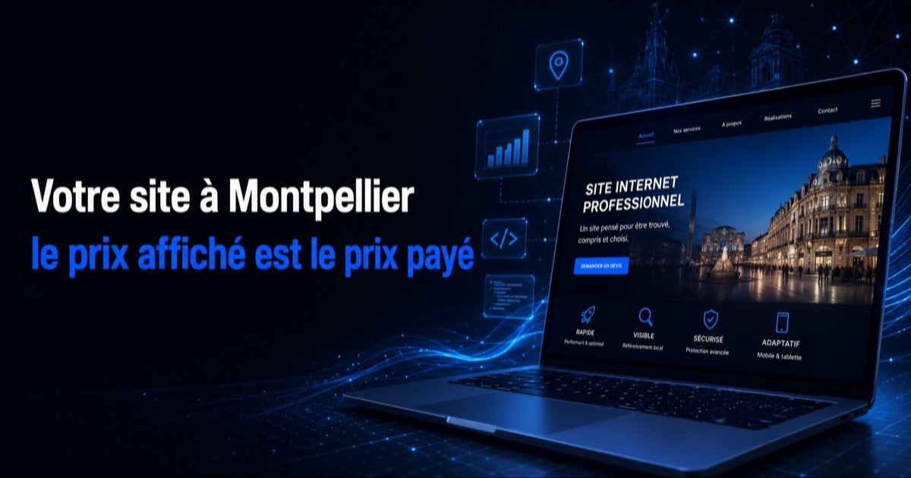

Combien coûte un site internet à Montpellier ?
De 750 € à 2 500 € pour un site vitrine, selon la complexité et le nombre de pages — au-delà dès que le projet sort de la vitrine : boutique en ligne, catalogue de plusieurs dizaines de références, outil métier connecté au site. Nous affichons la fourchette entière plutôt qu'un prix d'appel : ses deux bornes correspondent à des chantiers réels, et n'annoncer que la plus basse ne servirait qu'à faire venir des demandes que le devis décevrait.
Ce qui déplace le curseur à l'intérieur de cette fourchette : le nombre de prestations à traiter en pages distinctes, l'étendue de la zone à couvrir, le volume de contenu à produire, et les fonctions qui dépassent la vitrine (prise de rendez-vous en ligne, formulaire de devis détaillé, espace client).
Ces montants sont nets : il n'y a pas de TVA à ajouter. FIDUCIA CONSEILS relève de la franchise en base de TVA (article 293 B du code général des impôts), donc pas de « hors taxes » et pas de 20 % qui apparaissent au moment de payer — le prix annoncé est le prix payé. C'est un point à regarder de près quand vous comparez plusieurs propositions montpelliéraines : la plupart affichent un montant hors taxes. Si votre entreprise ne récupère pas la TVA — le cas de toute micro-entreprise et de beaucoup d'indépendants —, l'écart réel entre les deux devis est de 20 %, pas de zéro.
Un site n'est pas un achat unique, et le budget n'a pas à tomber d'un coup. Il se construit par étapes : le socle qui vous rend trouvable et joignable d'abord, les pages de prestation ensuite, les fonctions qui font gagner du temps quand elles deviennent utiles. Vous financez chaque étape au moment où elle arrive. C'est aussi pour cela que l'audit et le devis comptent davantage que le tarif affiché : ils déterminent par quoi commencer, ce qui peut attendre, et ce dont vous n'avez tout simplement pas besoin. Notre page création de site internet détaille ce que contient chaque poste.
Ce que montre réellement la première page de Google à Montpellier
Une chose qu'aucune page d'agence ne vous dira : sur cette requête, la moitié de la première page ne vous est pas accessible par le site. Nous avons relevé la page de résultats de « création site internet Montpellier » le 31 août 2026, en géolocalisation montpelliéraine. Sur les douze premiers emplacements, six sont occupés par le bloc local — les fiches d'établissement affichées avec une carte, un téléphone et des avis. Les résultats classiques ne commencent qu'en quatrième position visible.
La conséquence est directe pour un dirigeant montpelliérain : votre fiche Google Business Profile joue une partie que votre site ne peut pas jouer à votre place, et inversement. Le bloc local se déclenche sur une fiche rattachée à une adresse ou à une zone de service, pas sur des pages web. Une agence qui vous vend un site en promettant l'apparition dans le bloc local vous vend quelque chose que le site ne produit pas. C'est le sujet de notre article SEO local : pourquoi votre fiche Google ne suffit pas, et la méthode complète d'optimisation est dans notre guide Google Business Profile.
Deuxième constat du même relevé : parmi les résultats classiques, plusieurs pages bien positionnées appartiennent à des sites de très faible autorité — des indépendants, des structures de deux personnes. Aucun acteur ne domine cette requête. Ce n'est pas une SERP verrouillée par des marques ; c'est une SERP encombrée, ce qui n'est pas la même chose. Un site précis sur un segment précis y a une place, à condition de ne pas viser la formulation la plus générique en première intention.
Le marché montpelliérain, en chiffres publics
L'Hérault fabrique des entreprises à un rythme soutenu : 26 179 créations d'entreprises en 2025, dont 75,7 % d'entreprises individuelles, selon le dossier départemental de l'INSEE. Le département compte par ailleurs 151 185 établissements actifs. Chacune de ces créations est un concurrent potentiel — et, pour beaucoup d'entre elles, une entreprise qui devra exister en ligne sans budget de grand compte.
Côté équipement, le Baromètre France Num 2025, mené auprès de 11 021 entreprises dont 7 978 TPE, mesure que 65 % des TPE-PME possèdent un site internet présentant leur activité, contre 81 % des PME. La même enquête relève que 37 % des TPE-PME déclarent avoir des difficultés à trouver un prestataire numérique adapté, en hausse de 15 points en un an. Sur un bassin qui concentre autant d'agences que Montpellier, ce n'est pas un problème d'offre : c'est un problème d'appariement entre ce qu'une TPE peut engager et ce que la plupart des structures vendent.
Ce que contient un site qui capte des clients sur Montpellier
Quatre éléments décident du résultat, et le design n'en fait pas partie — il conditionne la crédibilité, pas la visibilité.
- Une page par prestation, pas une page « nos services » — un chercheur montpelliérain tape un besoin précis, pas une catégorie ; une page fourre-tout ne se positionne sur aucune des requêtes qu'elle mentionne ;
- Des pages de quartier ou de commune quand l'activité le justifie — Montpellier, Castelnau-le-Lez, Lattes et Saint-Jean-de-Védas ne sont pas la même zone de chalandise, et la concurrence n'y est pas la même ;
- Des coordonnées strictement identiques entre le site, la fiche Google et les annuaires — c'est le signal de cohérence le plus simple à tenir et le plus souvent négligé ;
- Un parcours de contact court — téléphone cliquable en permanence, formulaire réduit à l'essentiel, délai de réponse annoncé et tenu.
Si votre activité est un métier de terrain plutôt qu'un bureau, le raisonnement change sur un point : la zone d'intervention prend le pas sur l'adresse. Nous l'avons détaillé dans notre page dédiée à la création de site internet pour artisan.
Le point que la plupart des agences montpelliéraines n'ont pas encore intégré
Une part croissante des recherches ne passe plus par une liste de liens. Quand un dirigeant demande à ChatGPT ou à Perplexity quelle entreprise contacter pour tel besoin près de Montpellier, la réponse se construit à partir de sources structurées, citables et cohérentes entre elles — pas à partir d'un carrousel d'images ni d'une animation d'accueil.
Concrètement, cela déplace des arbitrages de conception : le texte doit répondre avant de séduire, les données de l'entreprise doivent être lisibles par une machine autant que par un humain, et chaque affirmation gagne à être vérifiable. C'est le travail que nous menons sous le nom de GEO — visibilité dans les moteurs de réponse IA, et c'est ce qui distingue nos livraisons d'un site vitrine classique. Nous ne promettons pas une citation par ChatGPT : personne ne contrôle ces réponses. Nous construisons les conditions qui la rendent possible, et nous mesurons ce qui se passe ensuite.
Basés à Montagnac, à 40 minutes de Montpellier
Nous ne sommes pas une agence montpelliéraine et nous ne prétendons pas l'être. FIDUCIA CONSEILS est établie à Montagnac, dans l'Hérault. Nous nous déplaçons dans la métropole pour les rendez-vous qui le justifient — cadrage, audit sur site, formation en présentiel — et le reste du travail se fait en visioconférence, ce qui évite de facturer des trajets à un client qui n'en tire rien.
Ce que cela change pour vous : un interlocuteur unique, joignable, qui connaît le tissu économique de l'Hérault parce qu'il y travaille. Ce que cela ne change pas : la qualité du site, qui ne dépend pas d'une adresse. Si votre besoin dépasse le site — automatiser ce qui se répète, être cité par les IA, former vos équipes —, notre page agence IA à Montpellier présente l'accompagnement complet.
Notre méthode, en quatre étapes
Quatre jalons, des délais annoncés d'avance, et vous validez chacun avant qu'on avance. Comptez 2 à 4 semaines pour un site vitrine complet, selon la disponibilité de vos contenus.
- 1. Cadrage — ce que vous vendez réellement, à qui, sur quelle zone, et ce que vos concurrents montpelliérains occupent déjà. C'est ce relevé qui décide de l'arborescence, pas l'inverse.
- 2. Maquette — vous voyez et validez le design avant toute ligne de code.
- 3. Développement — site complet, rapide sur mobile, structuré pour le référencement local et pour les moteurs de réponse IA.
- 4. Mise en ligne et suivi — indexation, Search Console, raccordement à la fiche Google, puis un point à froid pour ajuster sur les premières demandes reçues.
Vous avez déjà un site ? Regardez d'abord du côté de la refonte de site internet : elle conserve l'ancienneté du domaine et le référencement acquis, ce qui va souvent plus vite qu'un départ de zéro. Et si le besoin dépasse la vitrine — suivi d'affaires, planning, relances automatiques —, la création d'applications pour TPE et PME est le bon point d'entrée.
Questions fréquentes
Combien coûte la création d'un site internet à Montpellier ?
De 750 € à 2 500 € pour un site vitrine, selon la complexité et le nombre de pages — au-delà dès que le projet sort de la vitrine : boutique en ligne, catalogue de plusieurs dizaines de références, outil métier connecté au site. Ce qui déplace le curseur : le nombre de prestations à traiter en pages distinctes, l'étendue de la zone à couvrir, le volume de contenu à produire, et les fonctions qui dépassent la vitrine. Ces montants sont nets : FIDUCIA CONSEILS relève de la franchise en base de TVA (article 293 B du code général des impôts), il n'y a donc pas de TVA à ajouter et le prix annoncé est le prix payé. Face à un devis affiché hors taxes, l'écart réel atteint 20 % pour toute entreprise qui ne récupère pas la TVA. Après l'appel de cadrage de 30 minutes, vous recevez un devis ferme, poste par poste.
Êtes-vous une agence basée à Montpellier ?
Non, et nous préférons l'écrire plutôt que de le laisser deviner. FIDUCIA CONSEILS est établie à Montagnac, dans l'Hérault, à une quarantaine de minutes de Montpellier. Nous nous déplaçons dans la métropole pour les rendez-vous qui le justifient — cadrage, audit sur site, formation en présentiel — et le reste du travail se fait en visioconférence, ce qui évite de facturer des trajets. Beaucoup de pages concurrentes affichent une adresse montpelliéraine qui est une domiciliation : cela ne change rien à la qualité du site, mais autant savoir ce que l'on compare.
Un site suffit-il pour apparaître dans le bloc Google Maps de Montpellier ?
Non. Le bloc local — les trois établissements affichés avec une carte, aussi appelé pack local — se déclenche sur une fiche Google Business Profile rattachée à une adresse ou à une zone de service, pas sur un site internet. Le site et la fiche jouent deux rôles complémentaires : la fiche capte la recherche immédiate et le trajet, le site porte le détail des prestations, la preuve et la conversion. Une entreprise sans adresse à Montpellier peut viser les résultats organiques et déclarer une zone de service sur sa fiche ; elle ne peut pas s'inventer une implantation, et Google suspend les fiches dont l'adresse ne correspond à aucune activité réelle.
Combien de temps faut-il pour créer le site ?
Comptez 2 à 4 semaines entre le cadrage et la mise en ligne pour un site vitrine, le facteur limitant étant presque toujours la disponibilité de vos contenus — textes de référence, photos, informations légales — et la rapidité des validations, pas le développement. La mise en ligne n'est pas la fin : l'indexation par Google prend ensuite son propre temps, et aucune date d'apparition en première page ne peut être garantie par qui que ce soit.
Faut-il un site sur mesure ou un site WordPress ?
La question utile n'est pas la technologie mais qui pourra intervenir dessus dans trois ans. Un site vitrine de TPE n'a pas besoin d'une architecture complexe : il a besoin d'être rapide, lisible par les moteurs, modifiable sans nous appeler pour changer un horaire, et exportable si vous décidez un jour de partir ailleurs. Nous choisissons la base au cadrage, en fonction de qui maintiendra le site et de ce qu'il devra faire dans deux ans, jamais par habitude d'outil.
Mon site actuel est ancien : refonte ou création neuve ?
Ne jetez pas trop vite un domaine ancien. Un site vieillissant conserve deux actifs qui ne se rachètent pas : l'ancienneté du nom de domaine et les liens qui pointent vers lui. Une refonte bien conduite les préserve par un plan de redirections, là où un départ de zéro sur un nouveau domaine repart sans historique. La création neuve se justifie quand le domaine actuel porte une pénalité, un nom devenu inadapté à l'activité, ou une base technique impossible à reprendre. Cela se tranche par un examen du site existant, pas par principe.